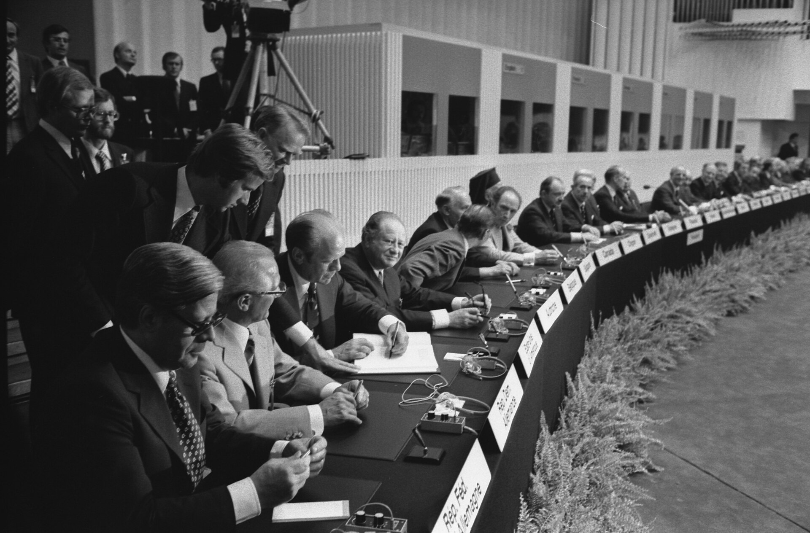

Directions: Read the full text, then answer the questions at the end.
By 1969 both superpowers had reasons to step back from the contest. The Soviet Union had drawn near the United States in nuclear strength, so neither side could expect a cheap advantage from building more. Soviet and Chinese forces had fought border clashes, and Moscow faced rivals on two fronts. The United States was carrying a war in Vietnam that held more than half a million of its troops, cost lives and money, and divided the country at home.
President Richard Nixon and his adviser Henry Kissinger built a policy from those facts. They called it détente, the easing of tension between the United States and the Soviet Union pursued in the 1970s, built on arms agreements, trade, and regular summit meetings. The design gave Moscow rewards it would lose by pushing too hard, so restraint served both sides.
The first move ran through China. In February 1972 Nixon traveled to Beijing, the first American president to visit the People's Republic, and opened relations with a government the United States had not recognized since 1949. The visit used one Communist power against the other. Moscow, facing an American opening to its Chinese rival, had reason to settle matters with Washington.
Three months later Nixon went to Moscow and signed the first agreements of SALT, the Strategic Arms Limitation Talks between the United States and the Soviet Union, and the agreements they produced in 1972 and in June 1979, limiting nuclear delivery vehicles. The 1972 interim agreement froze each side's number of land based and submarine launched missile launchers. It was arms control, negotiated limits on the weapons the superpowers could build or deploy, agreed in treaties rather than won in competition. Trade in grain and technology followed.
In August 1975, thirty five nations signed the Helsinki Accords. Western nations recognized Europe's postwar borders, the settlement Moscow had wanted since 1945. In the same document, the Soviet Union and its allies pledged respect for human rights and fundamental freedoms, including freedom of thought, conscience, and religion.
Moscow had signed the human rights language to win the borders, and it expected the words to cost little. Instead, dissidents inside the Soviet Union and Eastern Europe quoted the pledge back to their own governments. Watch groups in Moscow and Prague recorded whether their governments kept it, and sent the record abroad. A clause signed for advantage had become a slow fuse inside the settlement.

Détente also faced attack. Critics on the right charged that the agreements let the Soviet Union keep building weapons while the United States held back, and that trade rewarded a government without changing its conduct. Senator Henry Jackson pressed Moscow over its refusal to let Soviet Jews emigrate, tying trade to human rights in law.
President Jimmy Carter, elected in 1976, made human rights a stated test of foreign policy. He protested the treatment of Soviet dissidents by name, and pressed friendly governments as well as adversaries. Soviet leaders read the protests as interference in their internal affairs, and the summit relationship grew thinner each year.
The end came in December 1979. Soviet forces invaded Afghanistan, killed its leader, and installed a government that would take Moscow's direction. The invasion was meant to hold a friendly state in place. Instead it ended the decade's bargain in weeks.
Carter answered with an embargo on grain sales, a boycott of the 1980 Moscow Olympics, and the withdrawal of the second SALT treaty from Senate consideration. He also declared that an attempt by any outside force to gain control of the Persian Gulf region would be repelled by any means necessary. In Afghanistan, the Soviet army sank into a guerrilla war it could not finish.
Ronald Reagan won the election of 1980 on the charge that the United States had grown weak while the Soviet Union had grown strong. His administration raised defense spending sharply, built new missiles, and aided anti-Communist insurgencies fighting Soviet backed governments in Afghanistan, Nicaragua, and elsewhere, under the policy called the Reagan Doctrine. In Afghanistan the aid, including shoulder fired antiaircraft missiles, raised the price of staying.
In March 1983 Reagan named the adversary. Speaking to a convention of evangelical Christians, he called the Soviet Union an evil empire and the focus of evil in the modern world, and he rejected the idea that the two systems stood on equal moral ground. The words broke with a decade of careful summit language that had treated the Soviet government as a rival to be managed.
On March 23, 1983, Reagan announced the Strategic Defense Initiative, his proposal to build a defense in space against nuclear missiles, called Star Wars by its critics, which promised protection deterrence could not. Soviet leaders read the plan as an attempt to make their arsenal useless, leaving them exposed to an American first strike they could not answer.
The rest of 1983 raised the pressure. In September a Soviet fighter shot down a Korean passenger airliner that had strayed into Soviet airspace, killing all 269 people aboard. In November, NATO ran an exercise called Able Archer that rehearsed the steps of a nuclear release. Some in Moscow, by a debated reading of the evidence, may have taken the exercise for cover for a real attack. The year closed with the two governments barely speaking, and each side read the other's moves in the worst available light.
1. Name three reasons, one for each side and one shared in the reading's account, why the superpowers had cause to step back by 1969.
2. What did the 1972 SALT interim agreement freeze, and how did Nixon's visit to China earlier that year serve the same policy?
3. State the two sides of the Helsinki bargain of 1975, and explain what dissidents did with the human rights pledge.
4. What happened in Afghanistan in December 1979, and what three answers did President Carter give?
5. Answer in a short paragraph. Reagan used two different instruments in March 1983, a speech and a defense proposal. Name each one, state what each did, and explain how the events of that autumn raised the danger further.
1. Name three reasons why the superpowers had cause to step back by 1969. For the Soviet Union, its forces had fought border clashes with China in 1969, so Moscow faced rivals on two fronts. For the United States, the war in Vietnam held more than half a million American troops, cost lives and money, and divided the country at home. Shared by both sides, the Soviet Union had drawn near the United States in nuclear strength, so neither side could expect a cheap advantage from building more weapons.
2. What did the 1972 SALT interim agreement freeze, and how did the China visit serve the same policy? The interim agreement, signed in Moscow in May 1972, froze each side's number of land based and submarine launched missile launchers. It limited launchers, not warheads, and it allowed modernization of the launchers each side already had. The China visit of February 1972 opened relations with the People's Republic, the Communist government the United States had refused to recognize since 1949. It used one Communist power against the other, because Moscow, facing an American opening to its Chinese rival, had new reason to settle matters with Washington before the Moscow summit.
3. State the two sides of the Helsinki bargain, and explain what dissidents did with the pledge. Western nations recognized Europe's postwar borders, giving the Soviet Union the settlement in Europe it had wanted since 1945. In the same document, the Soviet Union and its allies pledged respect for human rights and fundamental freedoms, including freedom of thought, conscience, and religion. Dissidents inside the Soviet Union and Eastern Europe quoted the pledge back to their own governments. Watch groups in Moscow and Prague formed to record whether their governments kept the agreement, and they sent the record abroad when the answer was no.
4. What happened in Afghanistan in December 1979, and what three answers did Carter give? Soviet forces invaded Afghanistan, killed its leader, and installed a government that would take Moscow's direction, meaning to hold a friendly state in place on the Soviet Union's southern border. Carter answered with an embargo on grain sales to the Soviet Union, a boycott of the 1980 Moscow Olympics, and the withdrawal of the second SALT treaty, signed in June 1979, from Senate consideration. He also declared that an attempt by any outside force to gain control of the Persian Gulf region would be repelled by any means necessary. Full credit requires the invasion and any three of the four answers, accurately stated.
5. Name Reagan's two March 1983 instruments, state what each did, and explain how that autumn raised the danger. The speech, delivered to a convention of evangelical Christians, called the Soviet Union an evil empire and the focus of evil in the modern world, and rejected the idea that the two systems stood on equal moral ground. The defense proposal, the Strategic Defense Initiative announced on March 23, promised a defense in space against nuclear missiles, which Soviet leaders read as an attempt to make their arsenal useless. That September a Soviet fighter shot down a Korean passenger airliner that had strayed into Soviet airspace, killing all 269 people aboard. In November the NATO exercise Able Archer rehearsed the steps of a nuclear release, and some in Moscow, by a debated reading of the evidence, may have taken it for cover for a real attack. Credit answers that keep the Able Archer claim at that level of certainty and no higher.